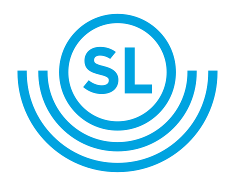

En tavla = en station med avgångstabell. En skylt = en LED-display för specifik linje/riktning.
Exportera dina inställningar för att spara dem externt, eller importera en tidigare sparad konfiguration.
| Linje | Trafikslag | Destination | Avgång |
|---|---|---|---|
| Laddar avgångar... | |||